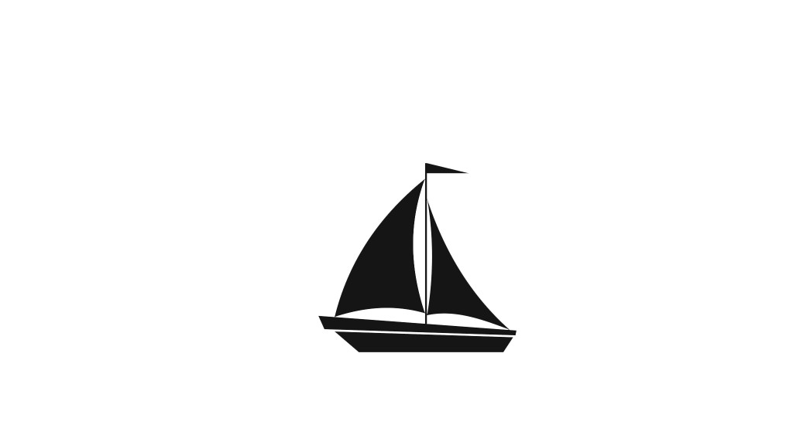
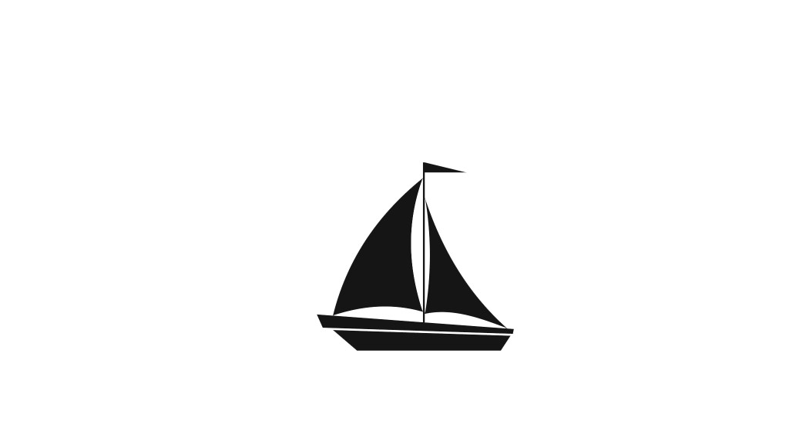

Aboute Me:
Are you ready to transform your digital landscape? Meet Faycal, a seasoned full-stack developer with a passion for turning innovative ideas into reality. With a robus t skill set covering both front-end and back-end technologies, Faycal brings a unique blend of creativity and technical expertise to the table. From crafting captivating user interfaces to optimizing complex server infrastructures, Faycal is your go-to partner for end-to-end web development solutions. Whether you're launching a new project, enhancing your current web presence, or troubleshooting technical challenges, Faycal is committed to delivering tailor-made solutions that exceed expectations. Join hands with Faycal and unlock the full potential of your digital endeavors. Let's build something extraordinary together!